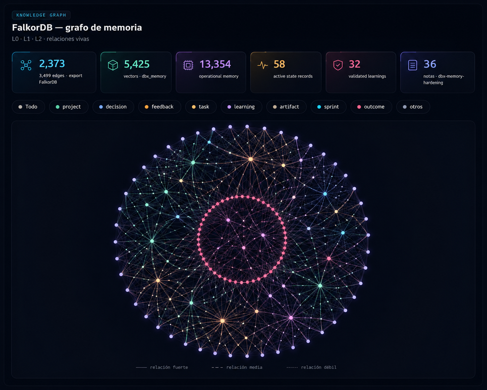
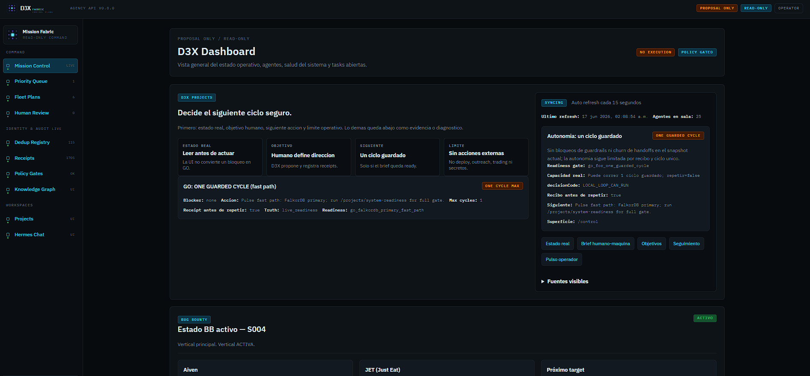
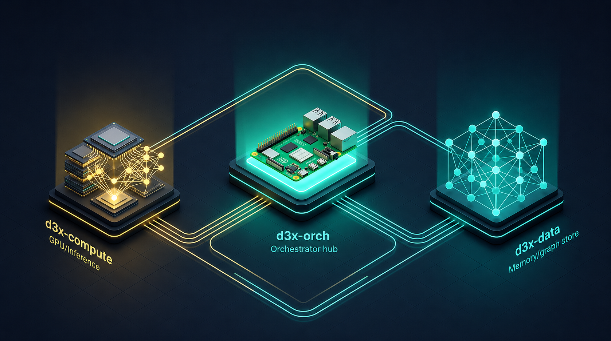
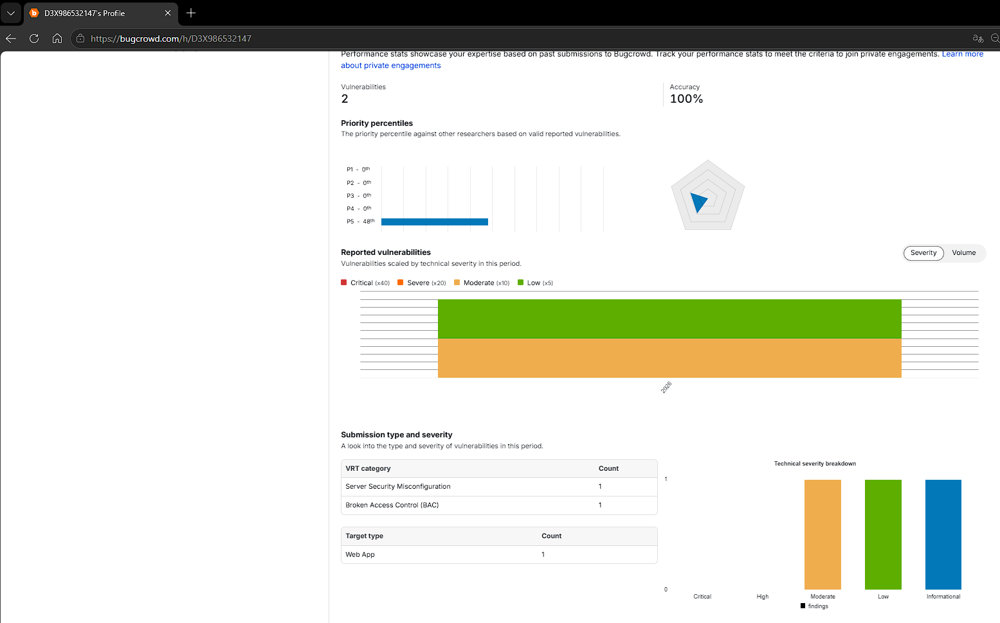

Sistema cognitivo
Exocortex
Memoria gobernada, grafo de verdad temporal y orquestación de agentes local-first.
Qué es
Una extensión cognitiva que corre en hardware modesto (Raspberry Pi): un sistema de memoria gobernada que sabe qué sabe, por qué, qué resultado lo confirmó y cuándo cambió.
Bajo el capó: grafo de verdad bi-temporal (283 edges en FalkorDB), validación determinista, pipelines con checkpoint/resume/replay y un gate que protege la capa core. Lectura matemática sin LLM en el hot-path; la escritura la propone un LLM pero la deciden gates y resultados. El resultado es un loop de memoria que se autocorrige y explica su propio conocimiento — cero alucinación como principio rector.
Capturas



D3X en acción
Vertical aplicada: investigación de seguridad ofensiva (Bug Bounty)
El sistema cognitivo no es abstracto: opera una operación real de investigación de seguridad.
El laboratorio
Un laboratorio de seguridad ofensiva construido sobre la memoria gobernada y la orquestación de agentes: un pipeline propio de reconocimiento → detección con herramientas en Go y Python, una VM de pruebas aislada (Burp, proxies, checks programados) y un scope enforcement determinista que detiene en duro cualquier cosa fuera de alcance.
Cómo compone el conocimiento
Las reglas, el alcance y las técnicas de cada programa viven en una base de conocimiento gobernada y reutilizable; los hallazgos se preservan con evidencia y solo se promueven cuando un resultado los confirma. Los CVEs frescos se convierten en checks ejecutables — no en plantillas auto-generadas.
Resultado
Hallazgos validados externamente por los programas (severidades P5 y P3 confirmadas), que demuestran capacidad real de investigación de seguridad — no solo automatización.

Laboratorio privado — los nombres de programas y los hallazgos se reservan por políticas de divulgación responsable.
Referencia
El diseño se apoya en el concepto de «science exocortex» — una extensión sintética de la cognición de una persona construida con agentes IA interconectados. Kevin G. Yager, “Towards a science exocortex”, Digital Discovery, 2024, 3, 1933–1957.